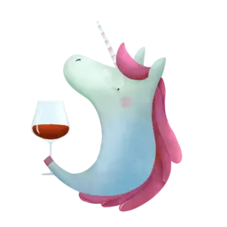

Welcome to Barberry Garden, a place where we drink wine and talk about wine.
Independent (self-funded) website focused on the wine world. How are wines grown and made? Who is making them? Where and since when? And even how do they taste and why? I am no sommelier and am not affiliated with any wine importer or store. I am just a casual who loves to drink, take notes and tinker with Emacs.
This site is still under development. So most of the planned features are not available yet. Check out the latest Site Updates article to learn about the development process.
Contact
I love receiving mails. So if you wish to talk about wine or report something on this site, just reach me via email.
- Join Telegram channel (UA) to get updates about upcoming tasting events I organise in Kyiv.
- Susbcribe to get a notification whenever new article is posted.
- Follow me on Vivino.
Posts
- (EN) Monthly report - July 2022 - August 1, 2022
- (EN) Mixed Bag Vol. 2: Orange - July 28, 2022 #report
- (EN) Lucy Margaux - July 25, 2022 #producer
- (EN) Storm - July 22, 2022 #producer
- (EN) Mixed Bag Vol. 1 - July 5, 2022 #report
- (EN) They thought I was just drinking all day... - July 2, 2022
- (EN) Monthly report - June 2022 - July 1, 2022
- (EN) A taste of Chenin Blanc - June 21, 2022 #report
- (EN) Site Updates - June 16, 2022
- (UA) Blind tasting by Vasyl Kalinichenko - June 7, 2022 #report
- (EN) Monthly report - May 2022 - June 1, 2022
- (EN) U600 - January 25, 2022 #report
- (EN) Pinot Noir in Garage - January 13, 2022 #report
- (EN) Some Amber Stars - January 11, 2022 #report
- (EN) Classy Bubbles: Taste the Yeast - December 21, 2021 #report
…or you can find more in the archives.
Latest reviews
- Monday, 1 August 2022
-
- 8.00 - Girolamo Russo Etna Rosso A Rina 2017
- 7.50 - Weingut Tement Blanc 2020
- Sunday, 31 July 2022
- Saturday, 30 July 2022
-
- 7.75 - Cascina Tavijn Bandita 2019
- Friday, 29 July 2022
-
- 7.40 - Els Vinyerons Saltamartí 2020
- 3.00 - Shima L.P Winery Thrapsathiri 2020
- 5.00 - Shima L.P Winery Liatiko 2020
- 7.20 - Alfredo Maestro Don Perdigón Pet-Nat
- 8.25 - Domaine Huet Le Haut-Lieu Sec 2017
- 1.50 - Ρίζες 2 Βιδιανό - Ασύρτικο Vidiano - Assyrtiko 2020
- 5.00 - Shima L.P Winery Vidiano Old Vines 2020
- 8.00 - Wasenhaus Spätburgunder 2020
- Thursday, 28 July 2022
-
- 8.50 - La Stoppa Ageno 2018
- 8.50 - Marco de Bartoli Integer Grillo 2018
- 8.20 - Ktima Ligas Spira 2019
- 7.50 - Lucy Margaux Pinot Gris Comme de Fleurs 2020
- 8.50 - Gentle Folk Summertown blanc 2019
- 8.60 - La Biancara Sassaia 1997
- 6.50 - La Stoppa Ageno 2019
- 8.20 - Tsikhelishvili Wines Alvani Rkatsiteli 2018
…or you can find more in the archives.